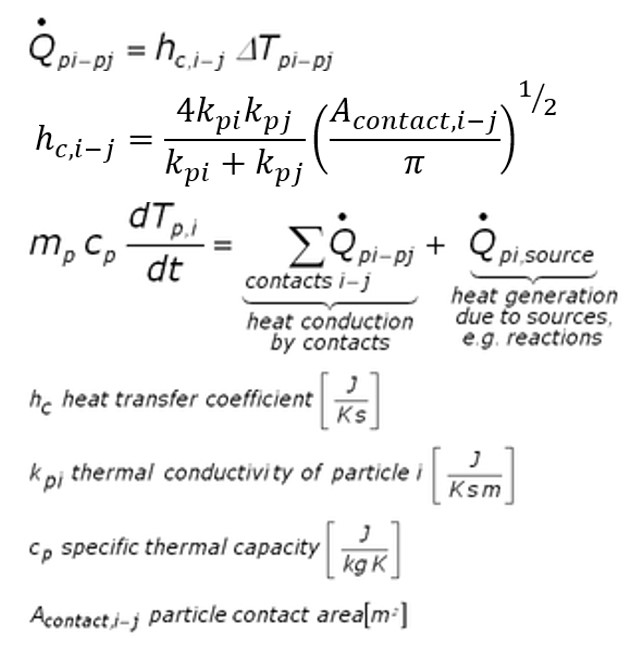

fix heat/gran command¶
fix heat/gran/conduction command¶
Syntax¶
fix ID group-ID heat/gran initial_temperature T0 general_keyword general_values
area_keyword area_values
fix ID group-ID heat/gran/conduction initial_temperature T0 general_keyword general_values
area_keyword area_values
- ID, group-ID are documented in fix command
- heat/gran/conduction or fix heat/gran = style name of this fix command
- initial_temperature = obligatory keyword
- T0 = initial (default) temperature for the particles
- zero or more general keyword/value pairs may be appended
- general_keyword = store_contact_data or temp_max
store_contact_data values = yes or no temp_max value = max. particle temperature in K
- zero or more area correction keyword/value pairs may be appended
- area_keyword = contact_area or area_correction or area_shape
contact_area values = overlap or constant [value] or projection or superquadric or convex area_correction values = yes or no area_shape values = square or circle
Examples¶
fix 3 hg heat/gran/conduction initial_temperature 273.15
LIGGGHTS(R)-INL vs. LAMMPS info:
This command is not available in LAMMPS.
Description¶
Calculates heat conduction between particles in contact and temperature update (see (Rickelt)) according to
It is assumed that the temperature within the particles is uniform. To make particles adiabatic (so they do not change the temperature), do not include them in the fix group. However, heat transfer is calculated between particles in the group and particles not in the group (but temperature update is not performed for particles not in the group). Thermal conductivity and specific thermal capacity must be defined for each atom type used in the simulation by means of fix property/global commands:
fix id all property/global thermalConductivity peratomtype value_1 value_2 ...
(value_i=value for thermal conductivity of atom type i)
fix id all property/global thermalCapacity peratomtype value_1 value_2 ...
(value_i=value for thermal capacity of atom type i)
To set the temperature for a group of particles, you can use the set command with keyword property/atom and values Temp T. T is the temperature value you want the particles to have. To set heat sources (or sinks) for a group of particles, you can also use the set command with the set keyword: property/atom and the set values: heatSource h where h is the heat source value you want the particles to have (in Energy/time units). A negative value means it is a heat sink. Examples would be:
set region halfbed property/peratom Temp 800.
set region srcreg property/peratom heatSource 0.5
The keyword temp_max allows to specify an upper limit for the per-particle temperature. Obviously, this value must be greater than 0K.
Contact area calculation:
Using keyword contact_area, you can choose from 5 modes of calulating the contact area for particle-particle heat transfer: If overlap is used, the contact area is calculated from the area of the sphere-sphere intersection If constant is used, a constant user-defined overlap area is assumed. If projection is used, the overlap area is assumed to be equal to rmin*rmin*Pi, where rmin is the radius of the smaller of the two particles in contact. For pure superquadric simulation you may also use the superquadric scheme that uses the local curvature radii to calculate the contact area. Finally the convex scheme can be used for simulations with convex particles only. This approach uses informations provided by the corresponding surface model.
Area correction:
For contact_area = overlap, superquadric or convex, an area correction can additionally be performed using keyword area_correction to account for the fact that the Young’s modulus might have been decreased in order to speed-up the simulation, thus artificially increasing the overlap. In this case, you have to specify the original Young’s modulus of each material by means of a fix property/global command:
fix id all property/global youngsModulusOriginal peratomtype value_1 value_2 ...
(value_i=value for original Young's modulus of atom type i)
This area correction is performed by scaling the contact area with (Y*/Y*,orig)^a, where Y* and Y*,orig are calculated as defined in pair_style gran . The scaling factor is given as e.g. a=1 for a Hooke and a=2/3 for a Hertz interaction.
Area shape:
If area_shape is set to ‘circle’ then the equations for the heattransfer coefficient (h_c) are taken as above. If this keyword is set to ‘square’ (the default) then the pi in this equation is neglected. Note that using ‘circle’ would be appropriate but due to backward compatibility issues ‘square’ is chosen as default. As the thermal conductivity is a calibration parameter this is not a big issue, as switching from the default (and old) square representation to the correct (and new) circle representation can be achieved by multiplying the previous thermal conductivities by sqrt(pi).
Coarse-graining information:
Using coarsegraining in combination with this command should lead to statistically equivalent dynamics and system state.
Note
Coarsegraining may or may not be available in LIGGGHTS(R)-INL.
Output info¶
You can visualize the heat sources by accessing f_heatSource[0], and the heatFluxes by f_heatFlux[0] . With f_directionalHeatFlux[0], f_directionalHeatFlux[1] and f_directionalHeatFlux[2] you can access the conductive heat fluxes in x,y,z directions. The conductive heat fluxes are calculated per-contact and half the value is stored in each atom participating in the contact. With f_Temp[0] you can access the per-particle temperature. You can also access the total thermal energy of the fix group (useful for the thermo command) with f_id .
In case the store_contact_data option is set to yes, additional output of per-atom properties is available. The property ids are nContactsConduction, contactAreaConduction and wallHeatFlux which represent the number of contacts a particle has, the combined contact area with other particles and the wall heat flux, respectively. These ids can be used as usual to output them in a dump command or to calculate atom properties.
Note
store_contact_data yes is required any heat conduction properties are
used in the steady state detection through fix ave/euler/custom.
Restart, fix_modify, run start/stop, minimize info¶
The particle temperature and heat source is written is written to binary restart files so simulations can continue properly. None of the fix_modify options are relevant to this fix.
This fix computes a scalar which can be accessed by various output commands. This scalar is the total thermal energy of the fix group
No parameter of this fix can be used with the start/stop keywords of
the run command. This fix is not invoked during energy minimization.
Restrictions¶
none
Default¶
contact_area = overlap, area_correction = no, area_shape = square
Literature:
(Rickelt) Rickelt, Discrete Element Simulation and Experimental Validation of Conductive and Convective Heat Transfer in Moving Granular Material, PhD thesis (2011).